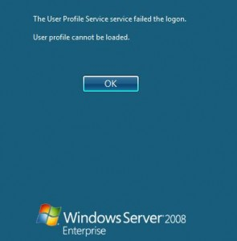

Resolving “The User Profile Service failed the logon. User profile cannot be loaded.” « JulianBen.com

Exact cause is unknown, but this issue may occur if the user profile was manually deleted by using the command prompt or Windows Explorer by a user or by some program. A profile that is manually deleted does not remove the security identifier (SID) from the user profile list in the registry. Since the SID is still present, Windows will still try to load the profile by using the ProfileImagePath that points to a nonexistent path. Therefore, the profile cannot be loaded.
This can also be a issue with the user profile entering into a backup state, or if the C:\Users\(User Name) user profile folder is manually renamed.
| 1. |
Log on to the ComputerLog on to the computer using the Administrator (or an Administrator-level) account. |
|
|---|---|---|
| 2. |
Crawl through the RegistryOpen the Start menu. In the Start Search area, type regedit and press Enter (if prompted by UAC, click Continue/Yes). In regedit, go to: Expand the ProfileList key and look for the SID key (named "S-1-5"...) with a long number that ends in ".bak". Click it, and look at the ProfileImagePath value in the right pane to verify that this is the user account profile that has the error. a) If you have two SID keys with the same number (with one ending in ".bak" and one showing the affected user account in the ProfileImagePath value), continue to Step 3; |
|
| 3. |
Two SID keys with the same numbera) Of the two SID keys that corresponds to the affected user account, right-click the SID key that does NOT end in ".bak" and click Rename. Proceed to Step 5... |
|
| 4. |
Only one SID key ending in ".bak"a) Right-click the SID key that corresponds to the affected user account and click Rename. |
|
| 5. |
Try logging on again!Close regedit and restart the computer. You should be able to logon now... |